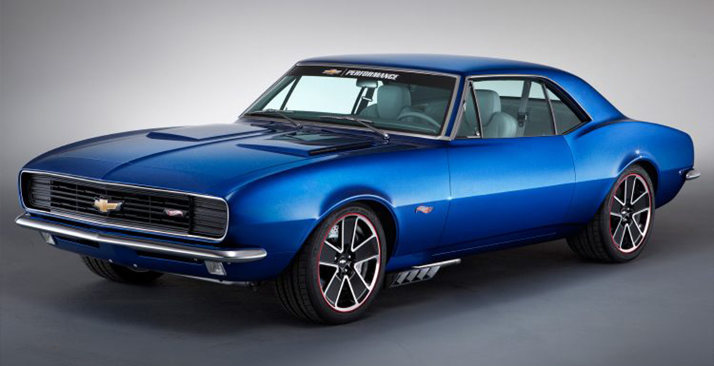
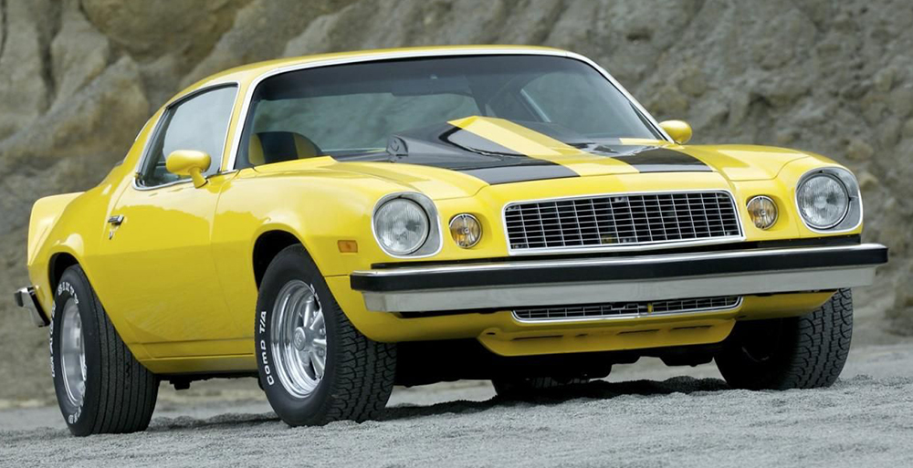
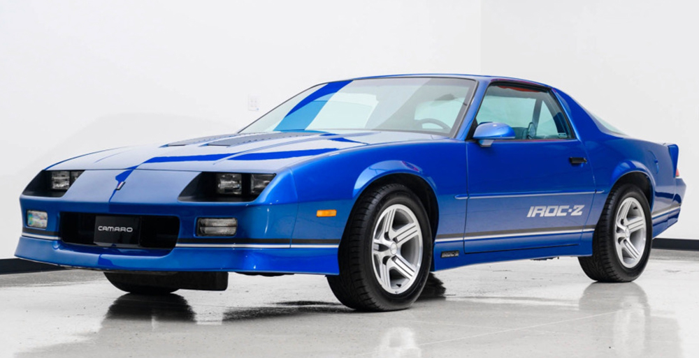
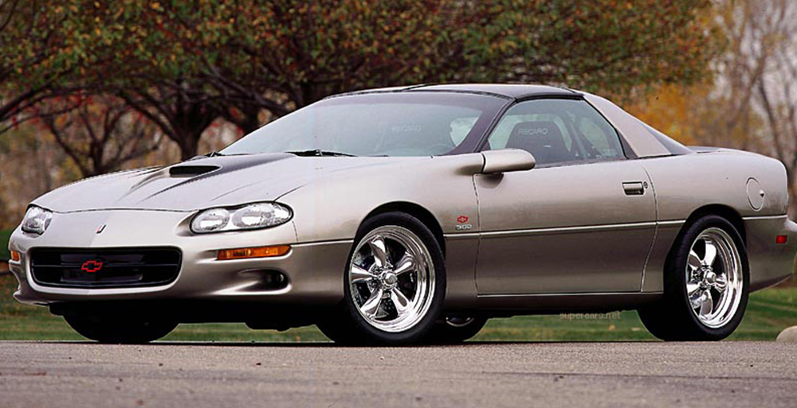
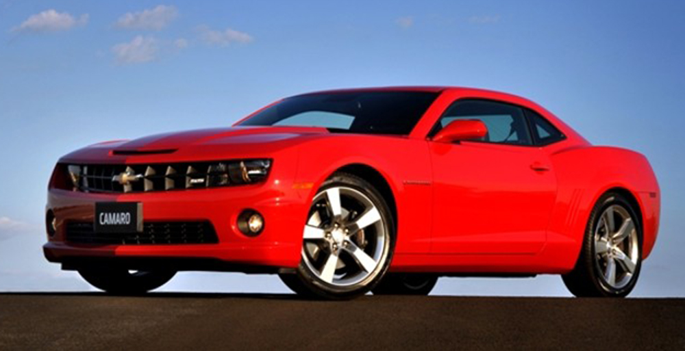
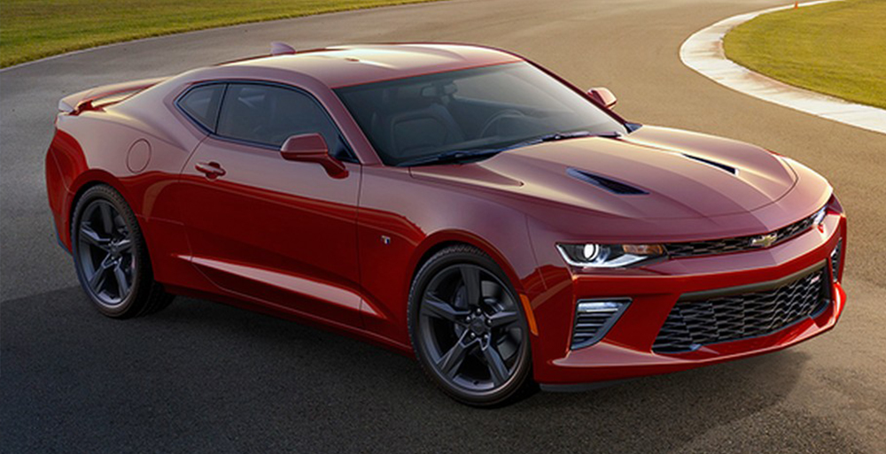

Camaro
Foi comercializada entre os anos de 1967 e 1969, e participou da Indy 500 por duas vezes. Existiam versões com motores diferentes: uns tinham um V8 de 202 cavalos de potência e 6,5 litros. Também existiu a incrível versão COPO, que apresentava um grande bloco de 7,0 litros com potência de 430 a 435CV.
A segunda geração do veículo foi a que mais vendeu. Ela foi lançada durante a crise do petróleo na década de 70. Mesmo assim, isso não abalou as vendas do veículo que ficou em linha até o ano de 1987. Ele era equipado com um motor de 8 cilindros em V, porém, com apenas 157CV de potência.
A terceira geração do Camaro foi lançada em 1982 e permaneceu em linha até 1992. Nessa época, foi apresentada uma nova arquitetura. Um dos diferenciais mais marcantes foi a suspensão dianteira reformulada e um visual muito futurista para a época. Essa geração foi equipada com um motor de quatro cilindros que gerava cerca de 93CV de potência, um grande corte no desempenho do carro. Entretanto, em 1990, foi lançada a versão 350 que desenvolvia 250CV e 47,7mkgf de torque.
Quando a Chevrolet lançou a quarta geração do Camaro no ano de 1993, ela não fez tanto sucesso. No entanto, atualmente, está cada vez mais valorizada graças às opções de motorização que tem. São duas versões, uma com motor V6 e outra com um V8. A versão foi vendida até o ano de 2002.
Do ano de 2002 — quando a última versão do Camaro foi produzida — até 2009, não tivemos novidades quanto ao veículo. No entanto, em 2010, ele retornou em grande estilo, resgatando os melhores elementos das versões anteriores com um visual ainda mais moderno. Essa versão tinha um apelo retrô, com um capô maior e faróis grandes integrados a quatro lanternas em formato retangular. Novamente, o Camaro abalou todo o mercado de automóveis no mundo. Foi justamente nesse período que a GM reconquistou a popularidade com o veículo, que chegou a vender nada mais que 500 mil modelos, superando em muito as vendas do concorrente Mustang.
Essa geração trazia a potência do motor de volta ao Camaro. Eram dois modelos, o primeiro, um V6 que conseguia ultrapassar os 327CV de potência e um torque de 38,4kgfm. Além desse, tinha uma versão com motor V8, que bateu o recorde de todos os veículos da linha, com 588 cavalos e 76,8kgfm.
No ano de 2016, foi lançada a última geração do veículo. Nesse mesmo período, o supercarro completou seus 50 anos de existência. Essa sexta geração carregou muitas características da anterior, mantendo o design com apelo retrô, porém, com grades, faróis e lanternas totalmente reestilizados para dar um ar de modernidade à máquina.
